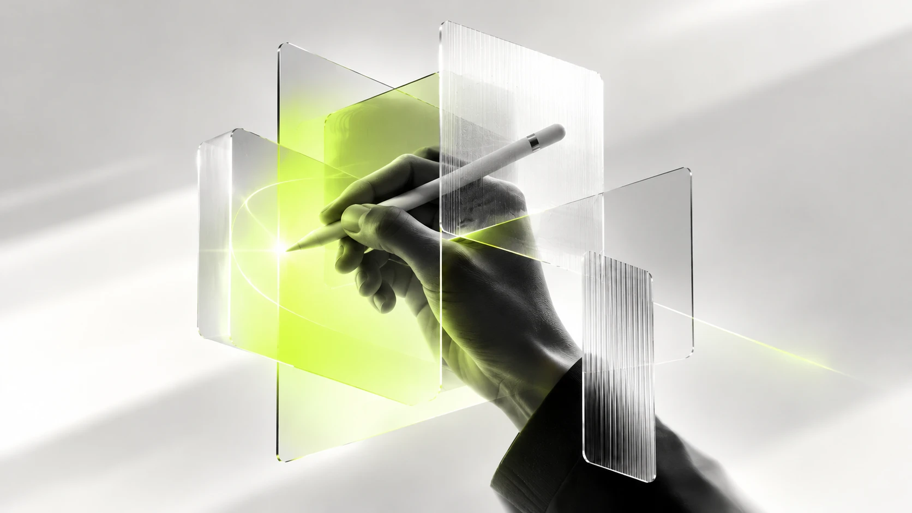

Design goes beyond design: business, brands and digital products
In all those cases, design can offer much more than a visual solution.

There are projects that start with a good idea, but do not quite know how to make it real. Others have a technical team capable of building almost anything, but need to define what is worth building. And there are those with a good product who cannot communicate why someone should choose it.
In all those cases, design can offer much more than a visual solution.
Over time, my work as a designer has led me to get involved in different stages of a project: from understanding the business and defining a brand strategy, to organizing the development of a digital product and designing the experience of the people who use it.
That combination lets me approach projects from a broader perspective, connecting ideas with the people who need them and with the teams that must make them real.
Understand the problem before looking for the solution
What a business needs is not always a new website, an app or a visual identity. Sometimes what is missing is clarity: understanding which problem needs to be solved, what the priorities are and which path makes the most sense to follow.
That is why, before thinking about solutions, I care about understanding the context. What the business is looking for, what its users need and what conditions exist to bring an idea into practice.
This view is also part of my work as a Product Owner. In that role, I connect the needs of the business with the technical team, turning ideas and goals into concrete tasks that can be developed, tested and improved.
I work with user stories, a roadmap and a prioritized backlog, take part in Scrum ceremonies and review deliveries to check that they meet what was defined. I also help order expectations and keep the team focused on what really matters.
In short, I help everyone understand what we are building, why we are building it and what the next step is.
Give meaning to what a brand wants to build
Once we understand the business and its proposal, another question appears: how do we help people understand its value?
A brand is not just a logo or a color system. It is the way a company or a product presents itself, sets itself apart and builds a relationship with people. When that identity is not well defined, communicating a good idea can become much harder.
Through brand strategy, I work on finding that meaning and turning it into a clear direction. I define the purpose, the positioning and the elements that express what makes a product, or the company behind it, different.
This can include a Brand Compass to guide brand decisions, naming, visual identity, voice and tone of communication, and even the design of its website.
The goal is for every decision to have a reason behind it, and for the brand not only to look good but also to help communicate better what it offers.
Turn ideas into experiences we can test
With digital products, there is an important gap between having an idea and knowing whether it really works for the people who will use it.
UX/UI design helps close that gap. It lets me explore how a product should work, which steps a person needs to follow, and how we can make the experience more intuitive, useful and consistent with the business goals.
I work on user flows, navigation structure, interface design and the prototypes that let us explore a solution before fully developing it.
I also use artificial intelligence tools to take some of these ideas to navigable or functional prototypes more quickly. That way we can see the proposal more clearly, test alternatives and spot opportunities for improvement before committing more resources to development.
Once we have a clear direction, I prepare the design and the handover to the technical team so the solution can be implemented in production.
A view that connects the different parts of a project
My work is not limited to a single stage or a single discipline. I care about how the business, the brand, the user experience and the technology relate, because the decisions we make in one area end up influencing the others.
That perspective lets me collaborate with different profiles, talk with both business people and technical teams, and help design decisions respond to concrete needs.
It is not about doing everything, but about understanding what each project needs and contributing from where I can add the most value: giving direction to ideas, turning them into solutions and helping them reach the people they were made for.
In the end, designing also means connecting the pieces so things work better.
Let’s talk about your project.
Tell me what stage your brand or product is at, and I will reply with a proposal for scope, timelines and budget.
+56 9 5821 7041Analytics only with your permissionReply within 1 to 2 business days